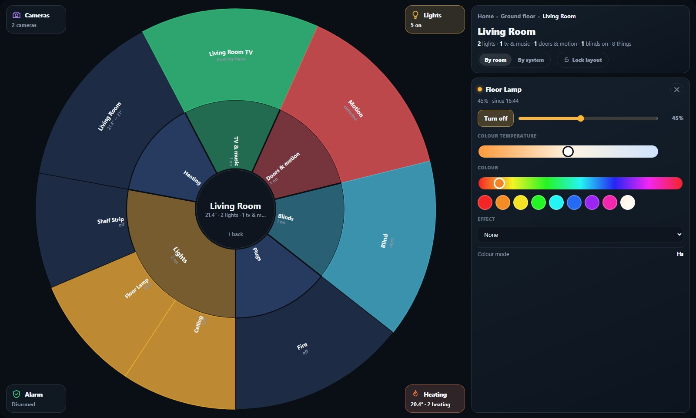
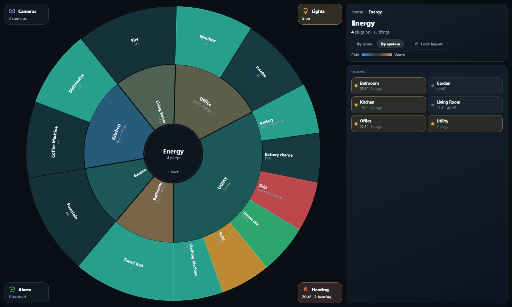
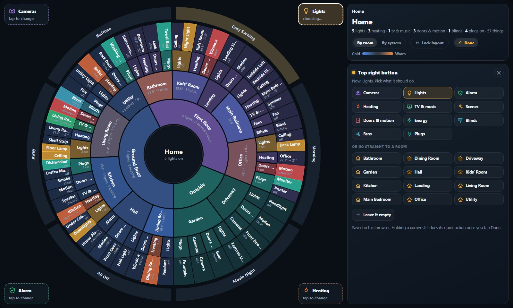
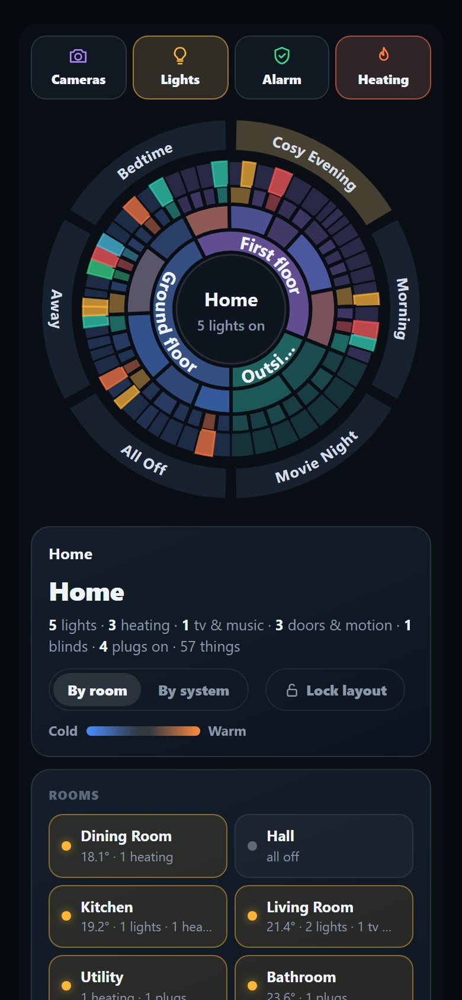
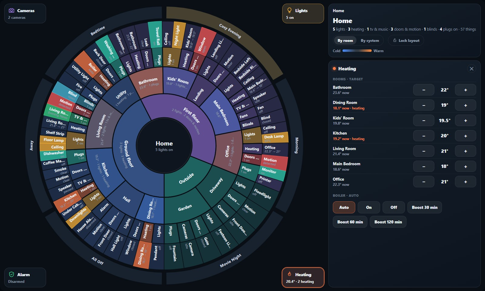
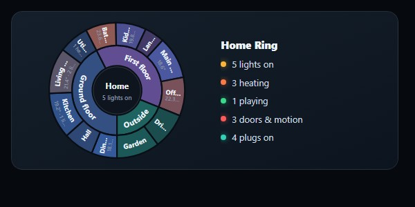

Floors in the middle, rooms around them, then the kinds of thing in each room, then the things themselves. Tap to go in, hold to switch, slide to dim. Home Assistant already knows where everything is, so the ring draws itself from that, and a new light in the bedroom simply turns up. Other people asked for it, so it's now a free card anyone can install.
Recorded straight from the card running on a pretend twelve-room house, so nothing in it is ours. Rooms pulse when someone moves, a doorbell opens the cameras on its own, and the ring re-centres on whatever you touch.
This is the published card itself, fed by a fake Home Assistant. Everything works: tap a room, hold a light, slide on a lamp, press a corner, switch to By system. Nothing here is connected to anything.
It started as a borrowed idea: the fan chart from our family-tree app, where generations radiate out from one person. Swap the generations for floors and rooms and you get a map of the house you can steer. There's no list of devices to keep up to date. Every ring is read from Home Assistant's own floors, rooms, devices and entities, and rebuilt whenever one of them changes.
Tap a floor or room and the ring zooms so it fills the circle. Tap a thing to open its card: brightness, colour, target temperature, a 24-hour graph.
Hold a light to switch it on or off, a speaker to pause it. Hold a whole room and all its lights go off, or on if they were all off.
Slide up or down on a dimmable light and a dial in the middle follows your finger. Lift off and the brightness is sent.
Tap the middle to step back out a level. Scenes sit in a band around the outside at the top level, one tap each.


Two promises that pull against each other. Anything added to Home Assistant should show up by itself, and the kitchen should still be where your hand expects it. Both are measured on our own house.
Putting every entity on the ring would have meant 771 slices, most of them readings. Instead each device gets one slice, with its extra readings on its card. That found 18 devices that had rooms but weren't showing: the solar units, the scales, the watch, the gas detector.
A new room used to shove its neighbours round by up to 18°. With the layout locked, newcomers start slim at the end of their floor and the ring turns to keep the known rooms centred. The worst move is 3.9°, and adding six devices moved nothing.
A slider in Customise sets how long the zoom takes, from instant to the full glide. It's kept per screen, so a slow wall tablet can be instant while the phone keeps the animation.
What it recognises, with the newest in colour:
Each corner of the ring is a button with a live reading: cameras, lights on, the alarm, the heating. Tap one for its card, hold it for its action, such as all lights off or a one-hour heating boost. Press Customise, the corners wiggle, and tapping one lets you swap it for media, scenes, doors, energy, blinds, fans, plugs or a favourite room.


The full ring has its own page on the wall tablet. A small version sits on the panel's Overview tab and on the phone dashboard, showing floors and rooms with a summary line. Tap it and the full ring opens.
The ring is only as tidy as Home Assistant's rooms, and ours weren't. All eight heating thermostats lived on the landing because that's where the heating hub is. Fixing it meant new rooms, a new Outside floor, and moving bulbs that had never been given a room.
When a doorbell rings, the Cameras corner opens on that door by itself and closes again after a minute if nobody touches it. A red dot shows recent motion or a person at the door.
Voice is optional. Say a room or floor to the house's voice assistant and the ring on the wall flies there. It uses Home Assistant's built-in room and floor names, so there's no list to keep.


history, which hid the browser's own history. Every page change from the card had been failing silently since the first release. One rename fixed it, and it shipped as 1.3.1.Everything personal was taken out and turned into settings: the cameras, the heating, the energy readings, what to leave off the ring. It needs Home Assistant 2024.4 or newer, when floors arrived. From 2026.11, HACS is built in as the Marketplace.
The repository's Open in Home Assistant button adds it to HACS straight away. It doesn't need to be in the HACS store first: that listing is a pull request still waiting for review, which can take months.
Download home-ring-card.js from the latest release, put it in /config/www/, and add it as a dashboard resource. Then add the card.
Paste a template into Developer tools, give the result to any AI with the prompt in AI_SETUP.md, and it writes your card and lists every device that still needs a room.
exclude in the card.The listing is submitted and every automatic check passes. It's now down to the reviewers.
A small round display on the wall or desk. A Pi Zero with a round screen runs the card as it is; a true ESP32 version would be a simpler ring, ideally with a turning knob to pick the room.
The room-presence radar could light a room by people rather than by motion, so an occupied room glows instead of pulsing.
A family-tree chart turned into a control panel, built for our wall and then handed out because people asked. It keeps nothing of its own: the house, the rooms and the devices all come from Home Assistant, which is why it keeps up when the house changes.
MIT licence. The demo house and every picture on this page are made up. Not affiliated with or endorsed by Home Assistant, the Open Home Foundation or HACS.